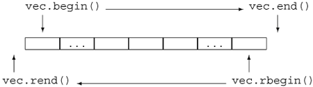
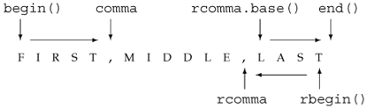

11.3. Revisiting IteratorsIn Section 11.2.2 (p. 398) we saw that the library defines iterators that are independent of a particular container. In fact, there are three additional kinds of iterators:
These iterator types are defined in the iterator header. This section will look at each of these kinds of iterators and show how they can be used with the generic algorithms. We'll also take a look at how and when to use the container const_iterators. 11.3.1. Insert IteratorsIn Section 11.2.2 (p. 398) we saw that we can use back_inserter to create an iterator that adds elements to a container. The back_inserter function is an example of an inserter. An inserter is an iterator adaptor (Section 9.7, p. 348) that takes a container and yields an iterator that inserts elements into the specified container. When we assign through an insert iterator, the iterator inserts a new element. There are three kinds of inserters, which differ as to where elements are inserted:
front_inserter Requires push_frontfront_inserter operates similarly to back_inserter: It creates an iterator that treats assignment as a call to push_front on its underlying container.
inserter Yields an Iterator that Inserts at a Given PlaceThe inserter adaptor provides a more general form. This adaptor takes both a container and an iterator denoting a position at which to do the insertion:
// position an iterator into ilst
list<int>::iterator it =
find (ilst.begin(), ilst.end(), 42);
// insert replaced copies of ivec at that point in ilst
replace_copy (ivec.begin(), ivec.end(),
inserter (ilst, it), 100, 0);
We start by using find to locate an element in ilst. The call to replace_copy uses an inserter that will insert elements into ilst just before of the element denoted by the iterator returned from find. The effect of the call to replace_copy is to copy the elements from ivec, replacing each value of 100 by 0. The elements are inserted just ahead of the element denoted by it. When we create an inserter, we say where to insert new elements. Elements are always inserted in front of the position denoted by the iterator argument to inserter. We might think that we could simulate the effect of front_inserter by using inserter and the begin iterator for the container. However, an inserter behaves quite differently from front_inserter. When we use front_inserter, the elements are always inserted ahead of the then first element in the container. When we use inserter, elements are inserted ahead of a specific position. Even if that position initially is the first element, as soon as we insert an element in front of that element, it is no longer the one at the beginning of the container:
list<int> ilst, ilst2, ilst3; // empty lists
// after this loop ilst contains: 1 2 3 4
for (list<int>::size_type i = 0; i != 4; ++i)
ilst.push_front(i);
// after copy ilst2 contains: 4 3 2 1
copy (ilst.begin(), ilst.end(), front_inserter(ilst2));
// after copy, ilst3 contains: 1 2 3 4
copy (ilst.begin(), ilst.end(),
inserter (ilst3, ilst3.begin()));
When we copy into ilst2, elements are always inserted ahead of any other element in the list. When we copy into ilst3, elements are inserted at a fixed point. That point started out as the head of the list, but as soon as even one element is added, it is no longer the first element.
11.3.2. iostream IteratorsEven though the iostream types are not containers, there are iterators that can be used with iostream objects: An istream_iterator reads an input stream, and an ostream_iterator writes an output stream. These iterators treat their corresponding stream as a sequence of elements of a specified type. Using a stream iterator, we can use the generic algorithms to read (or write) data to (or from) stream objects. The stream iterators define only the most basic of the iterator operations: increment, dereference, and assignment. In addition, we can compare two istream iterators for equality (or inequality). There is no comparison for ostream iterators. Defining Stream IteratorsThe stream iterators are class templates: An istream_iterator can be defined for any type for which the input operator (the >> operator) is defined. Similarly, an ostream_iterator can be defined for any type that has an output operator (the << operator).
When we create a stream iterator, we must specify the type of objects that the iterator will read or write:
istream_iterator<int> cin_it(cin); // reads ints1 from cin
istream_iterator<int> end_of_stream; // end iterator value
// writes Sales_items from the ofstream named outfile
// each element is followed by a space
of stream outfile;
ostream_iterator<Sales_item> output(outfile, " ");
We must bind an ostream_iterator to a specific stream. When we create an istream_iterator, we can bind it to a stream. Alternatively, we can supply no argument, which creates an iterator that we can use as the off-the-end value. There is no off-the-end iterator for ostream_iterator. When we create an ostream_iterator, we may (optionally) provide a second argument that specifies a delimiter to use when writing elements to the output stream. The delimiter must be a C-style character string. Because it is a C-style string, it must be null-terminated; otherwise, the behavior is undefined. Operations on istream_iteratorsConstructing an istream_iterator bound to a stream positions the iterator so that the first dereference reads the first value from the stream.
As an example, we could use an istream_iterator to read the standard input into a vector:
istream_iterator<int> in_iter(cin); // read ints from cin
istream_iterator<int> eof; // istream "end" iterator
// read until end of file, storing what was read in vec
while (in_iter != eof)
// increment advances the stream to the next value
// dereference reads next value from the istream
vec.push_back(*in_iter++);
This loop reads ints from cin, and stores what was read in vec. On each trip the loop checks whether in_iter is the same as eof. That iterator was defined as the empty istream_iterator, which is used as the end iterator. An iterator bound to a stream is equal to the end iterator once its associated stream hits end-of-file or encounters another error. The hardest part of this program is the argument to push_back, which uses the dereference and postfix increment operators. Precedence rules (Section 5.5, p. 163) say that the result of the increment is the operand to the dereference. Incrementing an istream_iterator advances the stream. However, the expression uses the postfix increment, which yields the old value of the iterator. The effect of the increment is to read the next value from the stream but return an iterator that refers to the previous value read. We dereference that iterator to obtain that value. What is more interesting is that we could rewrite this program as:
istream_iterator<int> in_iter(cin); // read ints from cin
istream_iterator<int> eof; // istream "end" iterator
vector<int> vec(in_iter, eof); // construct vec from an iterator range
Here we construct vec from a pair of iterators that denote a range of elements. Those iterators are istream_iterators, which means that the range is obtained by reading the associated stream. The effect of this constructor is to read cin until it hits end-of-file or encounters an input that is not an int. The elements that are read are used to construct vec. Using ostream_iterators and ostream_iteratorsWe can use an ostream_iterator to write a sequence of values to a stream in much the same way that we might use an iterator to assign a sequence of values to the elements of a container:
// write one string per line to the standard output
ostream_iterator<string> out_iter(cout, "\n");
// read strings from standard input and the end iterator
istream_iterator<string> in_iter(cin), eof;
// read until eof and write what was read to the standard output
while (in_iter != eof)
// write value of in_iter to standard output
// and then increment the iterator to get the next value from cin
*out_iter++ = *in_iter++;
This program reads cin, writing each word it reads on separate line on cout. We start by defining an ostream_iterator to write strings to cout, following each string by a newline. We define two istream_iterators that we'll use to read strings from cin. The while loop works similarly to our previous example. This time, instead of storing the values we read into a vector, we print them to cout by assigning the values we read to out_iter. The assignment works similarly to the one in the program on page 205 that copied one array into another. We dereference both iterators, assigning the right-hand value into the left, incrementing each iterator. The effect is to write what was read to cout and then increment each iterator, reading the next value from cin. Using istream_iterators with Class TypesWe can create an istream_iterator for any type for which an input operator (>>) exists. For example, we might use an istream_iterator to read a sequence of Sales_item objects to sum:
istream_iterator<Sales_item> item_iter(cin), eof;
Sales_item sum; // initially empty Sales_item
sum = *item_iter++; // read first transaction into sum and get next record
while (item_iter != eof) {
if (item_iter->same_isbn(sum))
sum = sum + *item_iter;
else {
cout << sum << endl;
sum = *item_iter;
}
++item_iter; // read next transaction
}
cout << sum << endl; // remember to print last set of records
This program binds item_iter to cin and says that the iterator will read objects of type Sales_item. The program next reads the first record into sum:
sum = *item_iter++; // read first transaction into sum and get next record
This statement uses the dereference operator to fetch the first record from the standard input and assigns that value to sum. It increments the iterator, causing the stream to read the next record from the standard input. The while loop executes until we hit end-of-file on cin. Inside the while, we compare the isbn of the record we just read with sum's isbn. The first statement in the while uses the arrow operator to dereference the istream iterator and obtain the most recently read object. We then run the same_isbn member on that object and the object in sum. If the isbns are the same, we increment the totals in sum. Otherwise, we print the current value of sum and reset it as a copy of the most recently read transaction. The last step in the loop is to increment the iterator, which in this case causes the next transaction to be read from the standard input. The loop continues until an error or end-of-file is encountered. Before exiting we remember to print the values associated with the last ISBN in the input. Limitations on Stream IteratorsThe stream iterators have several important limitations:
Using Stream Iterators with the AlgorithmsAs we know, the algorithms operate in terms of iterator operations. And as we've seen, stream iterators define at least some of the iterator operations. Because the stream iterators support iterator operations, we can use them with at least some of the generic algorithms. As an example, we could read numbers from the standard input and write the unique numbers we read on the standard output:
istream_iterator<int> cin_it(cin); // reads ints from cin
istream_iterator<int> end_of_stream; // end iterator value
// initialize vec from the standard input:
vector<int> vec(cin_it, end_of_stream);
sort(vec.begin(), vec.end());
// writes ints to cout using " " as the delimiter
ostream_iterator<int> output(cout, " ");
// write only the unique elements in vec to the standard output
unique_copy(vec.begin(), vec.end(), output);
If the input to this program is
23 109 45 89 6 34 12 90 34 23 56 23 8 89 23
6 8 12 23 34 45 56 89 90 109
The program creates vec from the iterator pair, input and end_of_stream. The effect of this initializer is to read cin until end-of-file or an error occurs. The values read are stored in vec. Once the input is read and vec initialized, we call sort to sort the input. Duplicated items from the input will be adjacent after the call to sort. The program uses unique_copy, which is a copying version of unique. It copies the unique values in its input range to the destination iterator. This call uses our output iterator as the destination. The effect is to copy the unique values from vec to cout, following each value by a space.
11.3.3. Reverse IteratorsA reverse iterator is an iterator that traverses a container backward. That is, it traverses from the last element toward the first. A reverse iterator inverts the meaning of increment (and decrement): ++ on a reverse iterator accesses the previous element; -- accesses the next element. Recall that each container defines begin and end members. These members return respectively an iterator to the first element of the container and an iterator one past the last element of the container. The containers also define rbegin and rend, which return reverse iterators to the last element in the container and one "past" (that is, one before) the beginning of the container. As with ordinary iterators, there are both const and nonconst reverse iterators. Figure 11.1 on the facing page illustrates the relationship between these four iterators on a hypothetical vector named vec. Figure 11.1. Comparing begin/end and rbegin/rend Iterators Given a vector that contains the numbers from 0 to 9 in ascending order
vector<int> vec;
for (vector<int>::size_type i = 0; i != 10; ++i)
vec.push_back(i); // elements are 0,1,2,...9
the following for loop prints the elements in reverse order:
// reverse iterator of vector from back to front
vector<int>::reverse_iterator r_iter;
for (r_iter = vec.rbegin(); // binds r_iter to last element
r_iter != vec.rend(); // rend refers 1 before 1st element
++r_iter) // decrements iterator one element
cout << *r_iter << endl; // prints 9,8,7,...0
Although it may seem confusing to have the meaning of the increment and decrement operators reversed, doing so lets us use the algorithms transparently to process a container forward or backward. For example, we could sort our vector in descending order by passing sort a pair of reverse iterators:
// sorts vec in "normal" order
sort(vec.begin(), vec.end());
// sorts in reverse: puts smallest element at the end of vec
sort(vec.rbegin(), vec.rend());
Reverse Iterators Require Decrement OperatorsNot surprisingly, we can define a reverse iterator only from an iterator that supports -- as well as ++. After all, the purpose of a reverse iterator is to move the iterator backward through the sequence. The iterators on the standard containers all support decrement as well as increment. However, the stream iterators do not, because it is not possible to move backward through a stream. Therefore, it is not possible to create a reverse iterator from a stream iterator. Relationship between Reverse Iterators and Other IteratorsSuppose we have a string named line that contains a comma-separated list of words, and we want to print the first word in line. Using find, this task is easy:
// find first element in a comma-separated list
string::iterator comma = find(line.begin(), line.end(), ',');
cout << string(line.begin(), comma) << endl;
If there is a comma in line, then comma refers to that comma; otherwise it is line.end(). When we print the string from line.begin() to comma we print characters up to the comma, or the entire string if there is no comma. If we wanted the last word in the list, we could use reverse iterators instead:
// find last element in a comma-separated list
string::reverse_iterator rcomma =
find(line.rbegin(), line.rend(), ',');
Because we pass rbegin() and rend(), this call starts with the last character in line and searches backward. When find completes, if there is a comma, then rcomma refers to the last comma in the linethat is it refers to the first comma found in the backward search. If there is no comma, then rcomma is line.rend(). The interesting part comes when we try to print the word we found. The direct attempt
// wrong: will generate the word in reverse order
cout << string(line.rbegin(), rcomma) << endl;
generates bogus output. For example, had our input been
FIRST,MIDDLE,LAST
then this statement would print TSAL! Figure 11.2 illustrates the problem: We are using reverse iterators, and such iterators process the string backward. To get the right output, we need to transform the reverse iterators line.rbegin() and rcomma into normal iterators that go forward. There is no need to transform line.rbegin() as we already know that the result of that transformation would be line.end(). We can transform rcomma by calling base, which is a member of each reverse iterator type: Figure 11.2. Relationship between Reverse and Ordinary Iterators
// ok: get a forward iterator and read to end of line
cout << string(rcomma.base(), line.end()) << endl;
Given the same preceeding input, this statement prints LAST as expected. The objects shown in Figure 11.2 visually illustrate the relationship between ordinary and reverse iterators. For example, rcomma and rcomma.base() refer to different elements, as do line.rbegin() and line.end(). These differences are needed to ensure that the range of elements whether processed forward or backward is the same. Technically speaking, the relationship between normal and reverse iterators is designed to accommodate the properties of a left-inclusive range (Section 9.2.1, p. 314), so that [line.rbegin(), rcomma) and [rcomma.base(), line.end()) refer to the same elements in line.
11.3.4. const IteratorsCareful readers will have noted that in the program on page 392 that used find, we defined result as a const_iterator. We did so because we did not intend to use the iterator to change a container element. On the other hand, we used a plain, nonconst iterator to hold the return from find_first_of on page 397, even though we did not intend to change any container elements in that program either. The difference in treatment is subtle and deserves an explanation. The reason is that in the second case, we use the iterator as an argument to find_first_of:
find_first_of(it, roster1.end(),
roster2.begin(), roster2.end())
The input range for this call is specified by it and the iterator returned from a call to roster1.end(). Algorithms require the iterators that denote a range to have exactly the same type. The iterator returned by roster1.end() depends on the type of roster1. If that container is a const object, then the iterator is const_iterator; otherwise, it is the plain iterator type. In this program, roster1 was not const, and so end returns an iterator. If we defined it as a const_iterator, the call to find_first_of would not compile. The types of the iterators used to denote the range would not have been identical. it would have been a const_iterator, and the iterator returned by roster1.end() would be iterator. 11.3.5. The Five Iterator CategoriesIterators define a common set of operations, but some iterators are more powerful than other iterators. For example, ostream_iterators support only increment, dereference, and assignment. Iterators on vectors support these operations and the decrement, relational, and arithmetic operators as well. As a result, we can classify iterators based on the set of operations they provide. Similarly, we can categorize algorithms by the kinds of operations they require from their iterators. Some, such as find, require only the ability to read through the iterator and to increment it. Others, such as sort, require the ability to read, write, and randomly access elements. The iterator operations required by the algorithms are grouped into five categories. These five categories correspond to five categories of iterators, which are summarized in Table 11.3.
With the exception of output iterators, the iterator categories form a sort of hierarchy: Any iterator of a higher category can be used where an iterator of lesser power is required. We can call an algorithm requiring an input iterator with an input iterator or a forward, bidirectional, or random-access iterator. Only a random-access iterator may be passed to an algorithm requiring a random-access iterator. The map, set, and list types provide bidirectional iterators. Iterators on string, vector, and deque are random-access iterators, as are pointers bound to arrays. An istream_iterator is an input iterator, and an ostream_iterator is an output iterator.
The C++ standard specifies the minimum iterator category for each iterator parameter of the generic and numeric algorithms. For example, findwhich implements a one-pass, read-only traversal over a containerminimally requires an input iterator. The replace function requires a pair of iterators that are at least forward iterators. The first two iterators to replace_copy must be at least forward. The third, which represents a destination, must be at least an output iterator. For each parameter, the iterator must be at least as powerful as the stipulated minimum. Passing an iterator of a lesser power results in an error; passing an stronger iterator type is okay.
| ||||||||||||||||||||||||||||||||||||||||||||||||||||||||||||||||